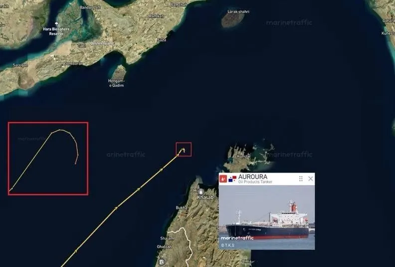

Война в Иране: как меняется баланс между США, Россией и Украиной
Дата:

История с войной США против Ирана сначала выглядела как ещё один локальный конфликт, который быстро забудут. Но за последние недели стало понятно: это событие уже вышло далеко за пределы региона и начинает менять баланс сил сразу по нескольким направлениям — от нефти до Украины.
Самый неожиданный момент — это не сами боевые действия, а то, чем они закончились. США, начав операцию с жёсткой риторикой и ультиматумами, в итоге пришли к перемирию, причём на условиях, которые ближе к позиции Ирана, чем Вашингтона. Это принципиально. Обычно подобные конфликты заканчиваются либо силовым навязыванием условий, либо затяжной войной. Здесь — резкий разворот.
Формально стороны договорились о паузе, но по сути Иран сохранил ключевое: контроль над Ормузским проливом. А это главный энергетический узел мира. Через него проходит огромная часть мировой нефти, и теперь Тегеран не просто влияет на этот поток — он может его регулировать и монетизировать. Уже обсуждаются схемы оплаты за проход танкеров, и даже при минимальных тарифах речь идёт о миллиардах долларов в год.
Это сразу меняет экономику конфликта. Если раньше Иран был под санкциями и ограничениями, то теперь у него появляется стабильный источник дохода, который сложно перекрыть военными методами. Более того, это влияет на весь рынок нефти. Цены уже пошли вверх, но важнее другое: рынок начинает закладывать риск долгосрочной нестабильности.
В чем выгода для Российской Федерации?
И вот здесь появляется Россия. Для неё ключевой фактор — не разовые скачки цен, а устойчивый спрос и длительное напряжение на рынке. Именно этого не хватало последние годы. Текущие данные по нефтегазовым доходам показывают, что бюджет всё ещё не восстановился до прежних уровней, но тренд может развернуться, если кризис затянется. В таком сценарии Россия начинает получать не просто рост доходов, а системное преимущество.
На этом фоне особенно интересно выглядит малозаметное решение США частично снять санкции с российских судов. Само по себе оно незначительное, но контекст говорит о другом. Это произошло без объяснений и не было привязано к каким-то критическим задачам. Такие шаги обычно используются как сигналы или тестирование реакции. И если смотреть шире, это может быть первым признаком более крупного разворота — попытки Вашингтона пересобрать отношения с Россией в рамках более широкой сделки.
Украина 2026
Ключ к пониманию — Украина. До последнего времени считалось, что её поддержка со стороны Запада — величина постоянная. Сейчас это уже не так очевидно. Европейский союз сталкивается с внутренними ограничениями: энергетический кризис, рост расходов на оборону, политические разногласия. Даже обсуждение новых пакетов помощи идёт тяжело, и нет гарантии, что они будут приняты в полном объёме.
При этом у США появляется новый инструмент давления. Если раньше они могли только ограничивать помощь, то теперь — перераспределять ресурсы в пользу других направлений. Война с Ираном даёт формальное основание забирать те же виды вооружений, которые идут Украине, и направлять их на Ближний Восток. Это качественно новый уровень давления.
Дополнительный фактор — ситуация внутри НАТО. Конфликт показал, что союзники США не готовы автоматически поддерживать их действия. Ограничения на использование баз, разногласия по операции, критика внутри Европы — всё это усилило старый тезис о том, что альянс становится обузой. На этом фоне заявления о возможном сокращении участия США уже не выглядят просто политическим шумом.
Промежуточные итоги по Фрейду
Если собрать всё вместе, получается довольно жёсткая картина для Киева. Его стратегия строилась на трёх вещах: удержание фронта, стабильная помощь Запада и ухудшение экономики России. Сейчас под давлением оказываются сразу два пункта. Фронт остаётся относительно стабильным, но это во многом связано с паузой, а не с фундаментальным изменением ситуации. А вот финансовая и военная поддержка уже перестаёт выглядеть гарантированной.
Почему США вообще пошли на перемирие — отдельный вопрос. Здесь сходятся сразу несколько факторов. Во-первых, экономика: рост ставок и нестабильность на рынках создают риск более широкого кризиса. Во-вторых, сама структура мировой торговли начинает меняться — обсуждаются расчёты в альтернативных валютах, что бьёт по позиции доллара. В-третьих, внутренняя политика: война оказалась непопулярной, а впереди выборы. И, наконец, банальный ресурсный фактор — такие операции быстро съедают дорогое вооружение, которое не бесконечно.
В итоге получается парадоксальная ситуация. Война, которая должна была усилить позиции США, привела к обратному эффекту. Иран не только устоял, но и получил новые рычаги влияния. Россия получает шанс улучшить экономическое положение за счёт нефти. Европа уходит в режим внутренней мобилизации. А Украина впервые сталкивается с риском того, что поддержка может оказаться ограниченной.
Это не означает, что всё уже решено. Перемирие может сорваться, конфликт — снова обостриться, а политические решения — поменяться. Но сам факт сдвига уже произошёл. И дальше вопрос не в том, вернётся ли всё обратно, а в том, насколько далеко зайдёт эта перестройка.